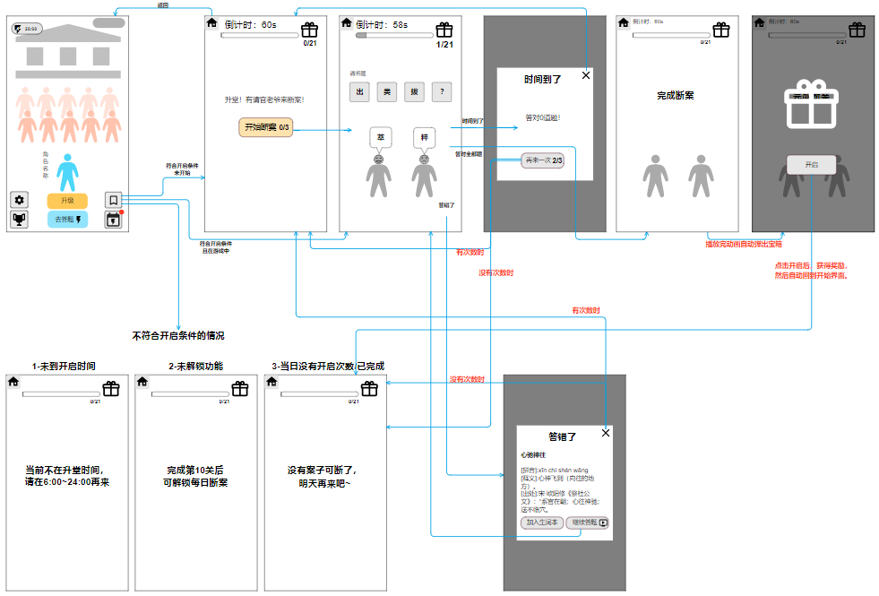
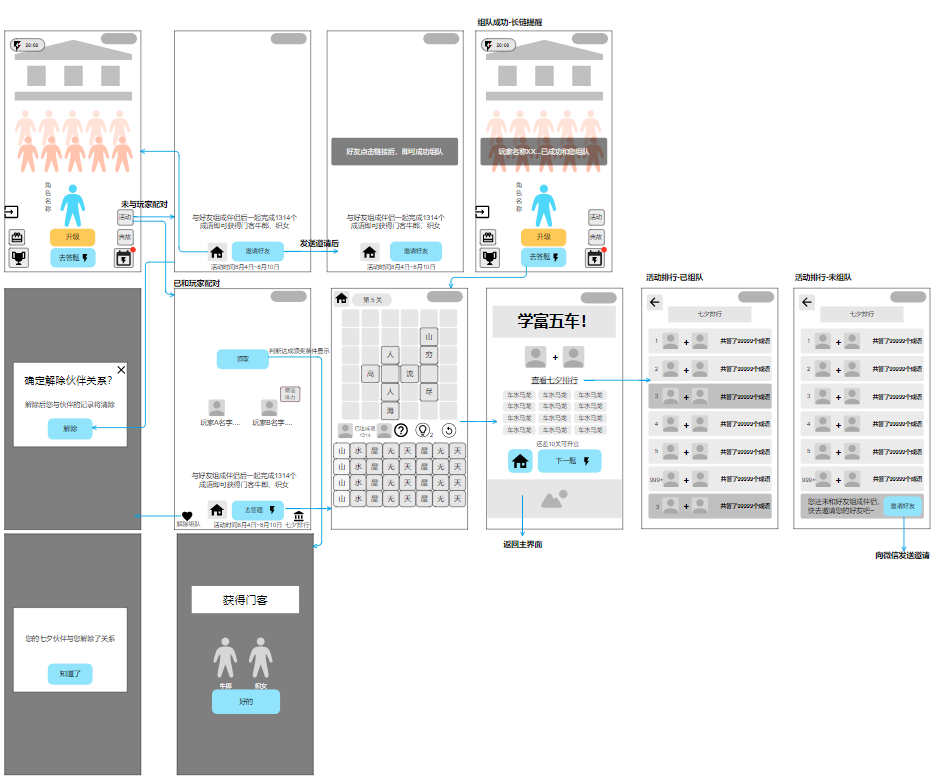
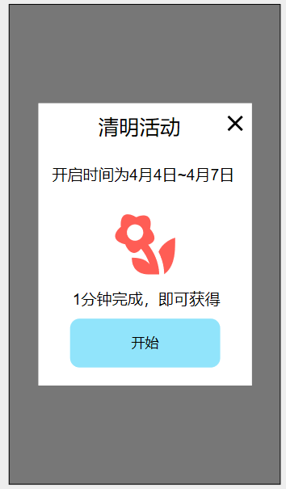
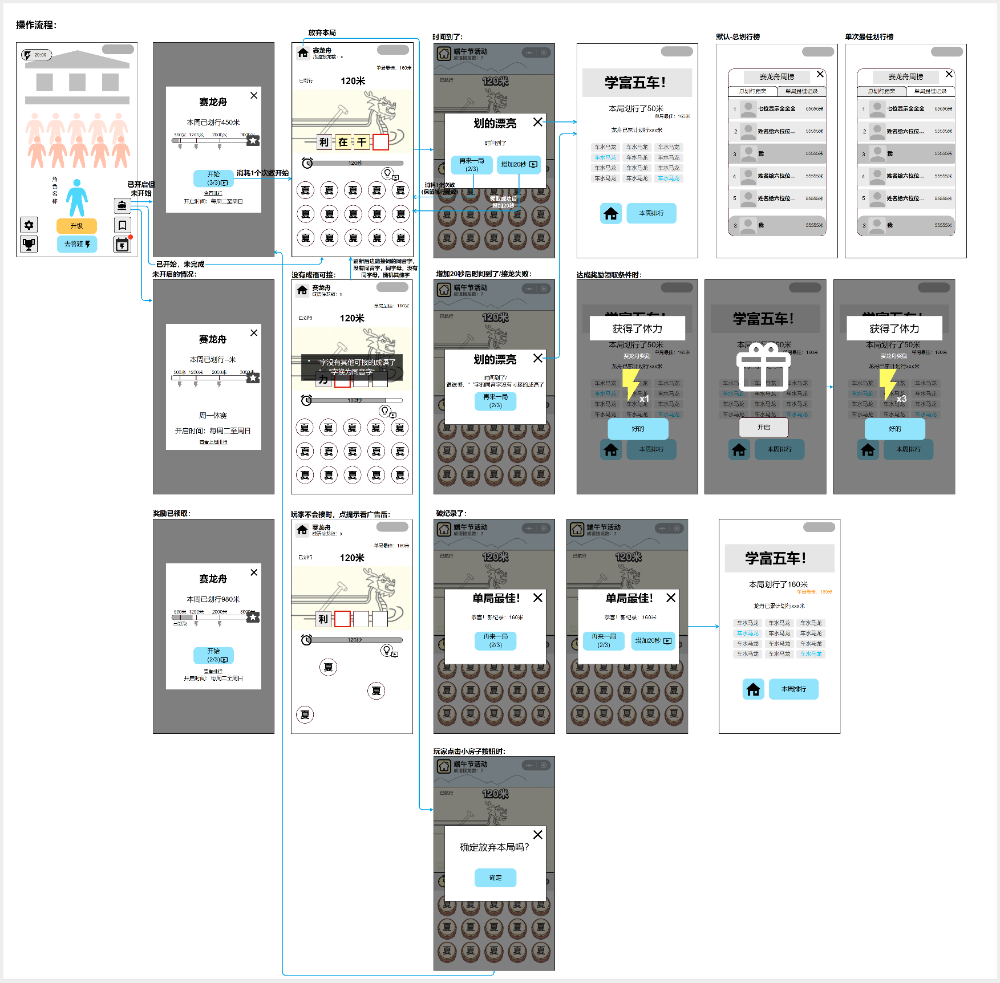

DESIGN EVIDENCE / 项目资料
成语项目设计资料.
系统规则、玩法状态与界面流程。
任职与项目参与依据本人已确认履历。以下为项目文档摘要和界面参考，文档元数据不能单独证明具体作者；不将全部方案归为个人独立完成。美术执行由团队相应岗位承担。方案图不代表所有功能最终上线，图中的示例排名、奖励与时间不作为经营成果。
SYSTEM DESIGN
系统策划
不只列出功能，还要说明进度如何记录、状态如何转换，以及失败或中断后怎样继续。
 《养成玩法系统设计》嵌入流程图查看原图 ↗
《养成玩法系统设计》嵌入流程图查看原图 ↗答题与成长循环
设计问题
如何让短关卡的完成形成可感知的成长，并保持入口、体力和进度逻辑一致？
关键方案
- 将关卡区分为已完成、未完成和未解锁；已经解锁的未完成关卡保留填字状态，再次进入不重复扣除解锁消耗。
- 通关后判断成长事件，在返回入口显示红点；回到主界面后点亮升级按钮，并显示距离下一次成长的目标。
- 多个成长事件按顺序处理；升级动画被切换界面或退出打断时，下次直接展示升级后的资源。
文档产出
《养成玩法系统设计》包含关卡状态、进入条件、成长事件顺序、红点规则，以及界面和动画需求。示意图是方案参考，不是实际成绩报告。
展开答题与成长循环大图
 《每日挑战系统设计》创建关卡流程图查看原图 ↗
《每日挑战系统设计》创建关卡流程图查看原图 ↗每日挑战与玩家创建关卡
设计问题
如何在核心填字之外组织每日内容，并让玩家可创建、发布和分享挑战？
关键方案
- 每日挑战说明入口解锁、计时、结算与排行榜；区分有数据和空榜，处理每日刷新时仍处于旧挑战的情况。
- 创建关卡按成语共用字连接，检查相邻限制与答题区边界；无候选项时提示回到上一步，未完成退出时确认是否放弃。
- 发布后连接好友挑战与本关排行；将新手未完成、功能未解锁、已经完成和未授权等分支分别说明。
文档产出
《每日挑战系统设计》交付常规流程、创建与撤回路径、授权分支、空榜状态、难度约束及 UI/音效需求；概率和后端配置不在此公开。
展开每日挑战与玩家创建关卡大图
GAMEPLAY RULES
玩法设计
把“选字填空”写成可实现、可检查的操作与判定规则。
字块状态与反馈
上方为答题区，下方为待填区。玩家先选择目标格，再选择汉字；组成成语后触发判定。
《填字核心玩法文档说明》规则摘要| 字块状态 | 操作与反馈 |
|---|
| 空白 | 可选择，显示当前目标。 |
|---|
| 固定 | 由关卡给定，不可选择或撤回。 |
|---|
| 已填 | 点击撤回到待填区，重新选择。 |
|---|
| 判定正确 | 整组成语变为绿色固定状态。 |
|---|
| 判定错误 | 变红并晃动，保留撤回机会。 |
|---|
文档还区分选择、填入、正确、错误与提示音效；判定音覆盖普通点击音，多个判定同时触发时避免重复播放。
UI / USER EXPERIENCE
UI/UE 交互设计
兼顾界面密度、第一次操作、错误后的恢复，以及完成后的学习路径。
 《成语生词本设计》嵌入交互图查看原图 ↗
《成语生词本设计》嵌入交互图查看原图 ↗从结算到收藏复习
设计问题
如何让玩家看完答案后继续查看释义，并保存不熟悉的成语？
关键方案
- 结算中的成语可进入释义，再添加到生词本；添加成功后按钮切换为已加入状态。
- 从主界面折叠菜单进入生词本，按首字母分组；点选词条复用释义界面，不另造一套详情。
- 补充删除与还原状态；收藏变化通过入口红点反馈，并明确查看后红点消失的时机。
文档产出
《成语生词本设计》包含双入口路径、收藏/删除状态、字母分组、详情复用和红点迭代说明。
展开从结算到收藏复习大图
根据内容密度调整字块
《适配答题界面字块布局》按题面占用与候选字数量切换布局，让稀疏题面使用更大的字块。
文档中的布局组合| 答题区 | 候选字区 |
|---|
| 7 × 7 | 6 × 2 |
| 8 × 8 | 7 × 3 |
| 9 × 9 | 8 × 4 |
说明中明确上方横纵尺寸的判断条件，以及候选字较少时的放大方式；不是单纯按屏幕比例缩放。
强引导之后，留出自主操作
《新手引导说明》先指定一次选字，再让玩家自由填完；随后连接返回、晋升和继续答题，完整展示一次成长反馈。
- 第一次选字：强引导演示填入。
- 完成关卡：弱提示下自主操作。
- 返回与晋升：连接答题和成长。
- 首次填错：提示点击错字撤回。
- 首次停滞：提示可用的帮助入口。
补充提示出现、关闭和不再重复的条件，避免引导持续遮挡操作。
INTERFACE REFERENCES
界面与美术资源
主界面承载成长目标和功能入口，释义界面组织标题、拼音、解释与出处。两张图用于对照信息层级，不用于认定个人美术制作。
LIVE CONTENT / 玩法与活动
常驻玩法与节日活动
从成语核心玩法延伸内容、社交与周期目标，重点看规则和交互如何完整交付。
本人项目唯一策划身份已确认。这四份资料未发现正文明确署名，不据修改用户名认定每份文档独立作者；历史方案不等同于最终上线版本，目标不作为已达成业绩。界面美术属于团队产出。
常驻玩法与状态设计
每日断案：常驻内容与错误恢复

《App每日断案玩法说明》原始流程图 · 历史方案参考设计工作
把易混淆字选择包装为公堂断案，用阶段晋升连接答题与成长反馈。
文档产出
交付玩法规则、异常分支、UI 与音效需求；体现常驻内容如何从题材包装落到可实现的状态流程。
关键取舍
- 区分未解锁、非开放时段、次数耗尽和已完成，让入口状态与玩家进度一致。
- 答错后暂停计时，展示成语信息；视频续答回到原题，超时与重开走不同路径。
- 兼顾离线题库、重启后的进度恢复，并定义入口、完成与视频续答的验证事件。
正文与原图的倒计时不一致，图中计时视为历史方案，不认定最终版本。视频播放量提升是设计目标，不是已验证结果。
查看原图（可缩放） ↗在页面内阅读每日断案：常驻内容与错误恢复大图
社交活动与协作交互
七夕活动：组队关系与共同目标

《七夕活动策划案》组队阶段原始交互图 · 历史方案参考设计工作
将收集解锁、好友配对与共同答题串成节日活动路径。
文档产出
交付活动流程、邀请规则、共同目标、解绑反馈、界面与版本安排，支持策划、程序和 UI 对齐。
关键取舍
- 预热收集与正式组队分阶段，配对后让关卡、结算和排行共同展示伙伴进度。
- 处理未解锁、已有队友、重复点击邀请和活动结束后的分享链接，避免关系状态冲突。
- 解绑需确认并清除共同进度与排行；已解锁资格保留，双方界面同步回到未组队状态。
文档记录的是历史活动安排与方案；组队传播和视频播放量均为目标，不由排期推定全部上线。
查看原图（可缩放） ↗在页面内阅读七夕活动：组队关系与共同目标大图
活动调度与内容包装
清明活动：限时内容与体验衔接

《清明节活动说明》原始入口界面参考 · 历史方案参考设计工作
复用每日挑战入口，用主题关卡、诗词展示和小红花形成节日反馈。
文档产出
交付限时内容切换、状态恢复、主题资源与反馈时序；展示活动不只换皮，还要衔接原有入口和规则。
关键取舍
- 定义活动开启与结束时的入口切换，结束后恢复每日挑战，兼顾版本审核与定时开关。
- 按未开始、进行中、已完成恢复到开始、原关卡或结算，明确跨日刷新和红点消失。
- 小红花作为限时完成标记，不改变排行规则；诗词展示结束后再进入结算并播放完成音效。
含真人头像的排行原图未公开，选用无身份信息的入口参考；图中日期、奖励目标均是历史方案示例。
查看原图（可缩放） ↗在页面内阅读清明活动：限时内容与体验衔接大图
规则完整性与平台适配
龙舟赛：接龙规则与周期竞争

《App龙舟赛玩法说明》原始操作流程图 · 历史方案参考设计工作
将成语接龙转为划行反馈，连接单局挑战、周累计成长与两类排行。
文档产出
交付生成规则、引导关、周期状态与完整操作流程，体现玩法规则、UI/UE 和平台差异的联合设计。
关键取舍
- 排除已用成语与首尾相同的候选，检查后续可接性；无法接续时尝试同音字，再判定结束。
- 区分单次最佳与周累计成绩，定义休赛展示、周期重置、阶段领奖和渐进式入门题面。
- 从小程序迁到 App 时调整视频续玩与提示，分别说明离开关卡、看视频和放弃时的计时行为。
原图保留早期端午主题与旧版示例，不代表最终 App 界面；文档中的内部活跃基线及完整配置不公开。
查看原图（可缩放） ↗在页面内阅读龙舟赛：接龙规则与周期竞争大图
资料来源与公开范围
- 系统：养成玩法系统设计、每日挑战系统设计。
- 玩法：填字核心玩法文档说明。
- 交互：适配答题界面字块布局、新手引导说明、成语生词本设计。
- 活动：App每日断案玩法说明、七夕活动策划案、清明节活动说明、App龙舟赛玩法说明。
- 资源：上述文档的精选嵌入图片，以及项目 UI 释义界面资源。
本文展示经筛选的图文与重新整理的规则摘要，不提供完整内部文档、配置表、统计报表或第三方素材库。历史方案中的目标不作为已达成指标，迭代设想不等于最终上线内容。